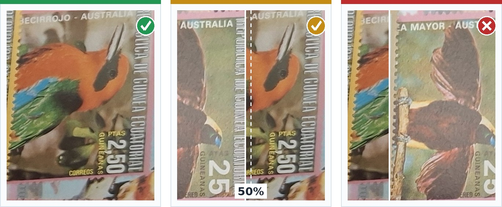

Übersetzt durch KI
AI Stamp Collection Scanner
Benutzerhandbuch — Browser Beta v1.0
Ein praktischer Leitfaden zu Fotos, automatischer Erkennung, Inventarprüfung und Speichern.

Ein praktischer Leitfaden zu Fotos, automatischer Erkennung, Inventarprüfung und Speichern.
Browser Beta hilft dabei, sichtbare Briefmarken auf Ihren Fotos zu finden und sie in ein bearbeitbares, mit den Fotos verknüpftes Briefmarkeninventar aufzunehmen. Die Prüfung durch den Benutzer bleibt wichtig.
JPG/JPEG, PNG und WebP werden unterstützt. Jeder Upload erhält eine eigene Fotonummer, auch bei gleichen Dateinamen. Ein Inventar kann bis zu 250 Fotos enthalten.
Direkt von oben, scharf und mit ausreichend Licht. Etwas Überlappung ist in Ordnung — von jeder Briefmarke sollte mindestens die Hälfte sichtbar bleiben.
Eine Marke, die etwa zur Hälfte unter einer anderen liegt, funktioniert noch, solange Ländername oder Wertangabe lesbar bleiben. Prüfen Sie diese Zeilen besonders sorgfältig.
Marken, die größtenteils unter anderen liegen, mit verdecktem Ländernamen und Wert. Schieben Sie sie auseinander und fotografieren Sie erneut.

Faustregel: mindestens 50 % jeder Briefmarke sichtbar, und entweder der Ländername oder die Wertangabe lesbar. Dies ist ein Inventarwerkzeug, keine Bewertung — das Foto muss nur gut genug sein, um eine Marke zu finden und zu erkennen, nicht um ihren Zustand zu beurteilen.
Warum Überlappung schwierig ist: Wenn ein Teil einer Briefmarke von einer anderen verdeckt wird, ist ihre vollständige Form nicht im Foto vorhanden. Der Scanner kann sie übersehen oder zwei Marken als ein Objekt behandeln.
Öffnen Sie den AI Stamp Scanner, wählen Sie Ihre Fotos und anschließend Inventar erstellen. Der Detektor versucht, jede sichtbare physische Briefmarke einzeln zu finden und dafür Inventareinträge zu erstellen.
Möchten Sie, dass Land, Zeitraum, Wert und mehr automatisch statt „Unbekannt" ausgefüllt werden? Fügen Sie oben auf der Scanner-Seite Ihren eigenen kostenlosen Google-Gemini-API-Schlüssel ein (kostenlos erhältlich bei Google AI Studio, keine Kreditkarte nötig). Der Schlüssel bleibt nur in Ihrem eigenen Browser. So ausgefüllte Zeilen erhalten den Status „KI-Vorschlag" und müssen, wie jedes automatische Ergebnis, noch geprüft werden.
Jede einzeln sichtbare physische Briefmarke soll einen eigenen Inventareintrag erzeugen, auch wenn mehrere Marken identisch aussehen. Anzahl ist ein bearbeitbares Sammlerfeld und kein Ersatz für die Erkennung einzelner Objekte. Vergleichen Sie die Anzahl der Einträge immer mit dem Foto.
Vergleichen Sie das Inventar mit dem Quellfoto. Achten Sie besonders auf dicht gefüllte Albumseiten, gedrehte Marken, dunkle Fotos und überlappende Marken. Ergänzen oder korrigieren Sie unbekannte Angaben bei Bedarf.
Briefmarkenfotos und Entwurfsdaten werden lokal im Browser verarbeitet und nicht zur Briefmarkenbestimmung hochgeladen. Anonyme Nutzungsstatistiken können erhoben werden, um die Beta zu verbessern. Speichern Sie fertige Arbeiten regelmäßig als Excel oder CSV.
Sie können das Inventar als Excel- oder CSV-Datei speichern. Beide enthalten Datensatz-ID, Fotonummer, ursprünglichen Dateinamen und Bildreferenz. Fotos und Vorschaubilder werden in Browser Beta v1.0 nicht in Excel eingebettet.

Browser Beta unterstützt Erkennung und Inventarerstellung; automatische Ergebnisse sollten jedoch immer geprüft werden.
Grenze: Die Erkennung bedeutet nicht, dass jede Briefmarke sicher gefunden oder identifiziert wird. Browser Beta v1.0 bestimmt weder Wert, Seltenheit, Echtheit, Wasserzeichen, genaue Zähnung noch Katalognummer.